#9215 Sturmfahrt nach Alaska
Alternativ: The World in His Arms
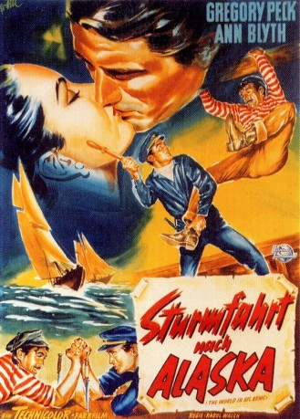 
 IMDB-Wertung: 7.2 / 10
IMDB-Wertung: 7.2 / 10  Metascore: 0
Metascore: 0 
Der mit Robbenpelzen handelnde Kapitän Jonathan Clark lernt um 1850 in San Francisco die russische Adelige Marina kennen, die ihn bittet, sie mit seinem Schiff nach Alaska zu bringen, um so der geplanten Hochzeit mit dem sinistren Prinzen Semyon zu entgehen. Die beiden verlieben sich ineinander, doch Seymon schreitet zur Tat und entführt Marina mit dem Schiff, um sie dann mittels Erpressung zur Heirat zu zwingen. Clark, der ständig noch mit seinem Intimfeind und Haudegen-Konkurrenten Portugee - welcher Marina ebenfalls mag - zu kämpfen hat, nimmt die Verfolgung auf...
Jahr: 1952
Dauer: 104 Minuten
FSK: 12
Land: USA Studio: Universal PicturesTonspuren:
Untertitel:
Auflösung: 1080p (1472x1080) Größe: 7823 MB
Genre: Action, Abenteuer, Liebe, Geschichte
Regisseur: Raoul Walsh
Drehbuch: Borden Chase
Soundtrack: Frank Skinner
Darsteller:
 Gregory Peck als Capt. Jonathan Clark
Gregory Peck als Capt. Jonathan Clark- Ann Blyth als Countess Marina Selanova
- 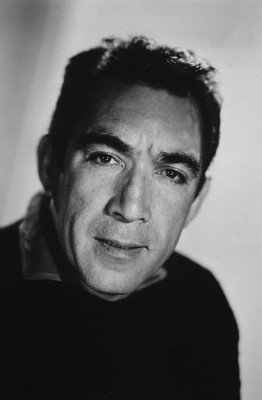 Anthony Quinn als Portugee
- 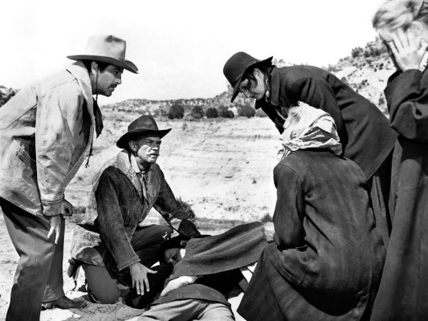 John McIntire als Deacon Greathouse
- Carl Esmond als Prince Semyon
- Andrea King als Mamie
- Eugenie Leontovich als Anna Selanova
- 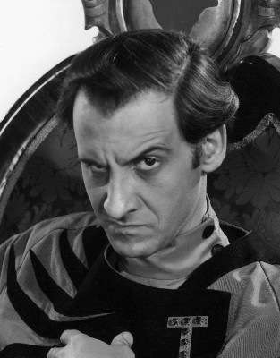 Hans Conried als Eustace - Hotel Clerk
- 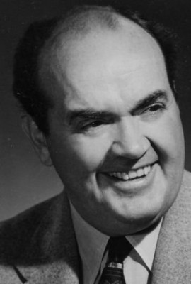 Rhys Williams als Eben Cleggett
- 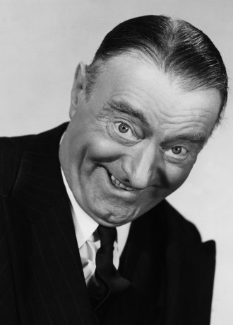 Sig Ruman als General Ivan Vorashilov
- Gregory Gaye als Colonel Paul Shushaldin
- Bryan Forbes als William Cleggett
- Suzan Ball als (uncredited)
- 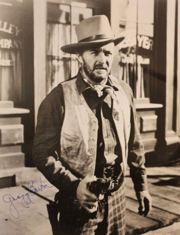 Gregg Barton als Seaman (uncredited)
- William 'Wee Willie' Davis als 'Shanghai' Kelley (uncredited)
- 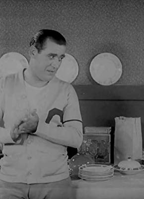 Carl Harbaugh als Seaman (uncredited)
- 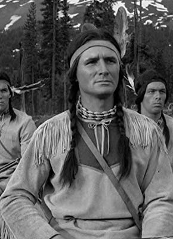 Chuck Hayward als Guest (uncredited)
- 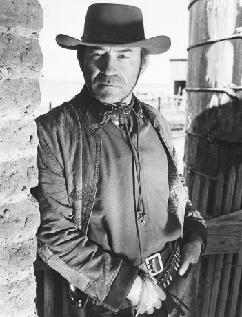 Dave Kashner als Whip Man (uncredited)
- June McCall als Mamie's Girl (uncredited)
- 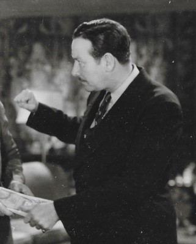 Philo McCullough als Guest (uncredited)
 Tudor Owen als Old Sailor (uncredited)
Tudor Owen als Old Sailor (uncredited)- Eve Whitney als Lilly (uncredited)
- Bill Radovich als Ogeechuk
- Henry Kulky als Peter, Russian Servant
- Carl Andre als Seaman (uncredited)
- Roman Arnoldoff als Captain Feodor (uncredited)
- Frederic Berest als Cossack Officer (uncredited)
- George Blagoi als Minor Role (uncredited)
- Frank Chase als Seaman (uncredited)
- Peter Chong als Wung Lo (uncredited)
- Leo Curley als Bartender (uncredited)
- Carli Elinor als Leader (uncredited)
- Richard Farmer als Guest (uncredited)
- Lee Tung Foo als Chinese Proprietor (uncredited)
- James Fowler als Bellhop (uncredited)
- Diane Garrett als Mamie's Girl (uncredited)
- Augie Gomez als Minor Role (uncredited)
- Mike Lally als Guest (uncredited)
- Syl Lamont als José (uncredited)
- Gregg Martell als Seaman (uncredited)
- John McKee als Seaman (uncredited)
- Shepard Menken als Officer (uncredited)
- Leo Mostovoy als Nicholas (uncredited)
- 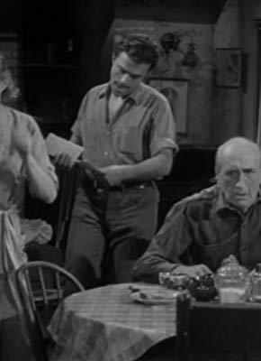 Paul Newlan als Tough Sailor (uncredited)
- Arthur Page als Minister (uncredited)
- Milicent Patrick als Lena (uncredited)
- Hugh Prosser als Mounted Cossack Officer (uncredited)
- Susan Randall als Mamie's Girl (uncredited)
- Dick Rich als Tough Sailor (uncredited)
- George Scanlan als Seaman (uncredited)
Datei: X:\1950-1959\Sturmfahrt nach Alaska (1952, FSK12, 1472x1080).mkv seit 20.07.2018
Festplatte: HD 1900-1970
 Es gibt insgesamt 141 Filme in der Gruppe '1950-1959'
Es gibt insgesamt 141 Filme in der Gruppe '1950-1959'